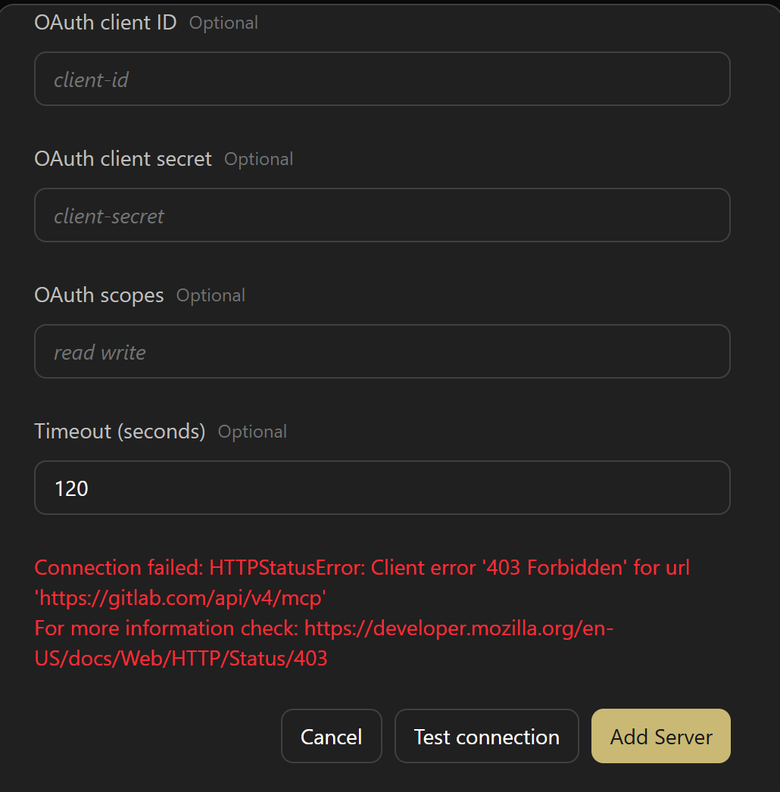
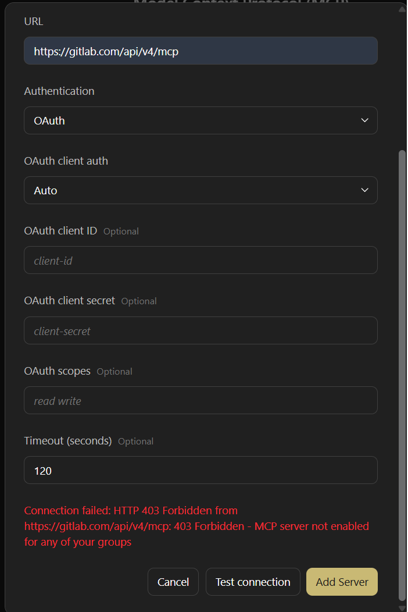
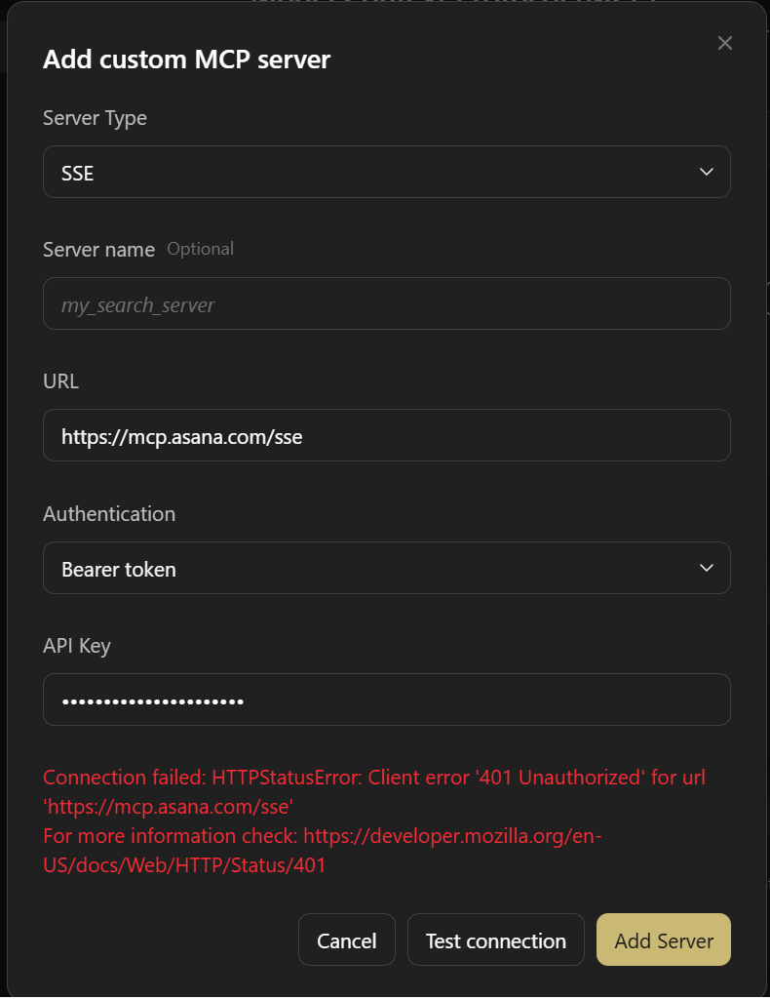
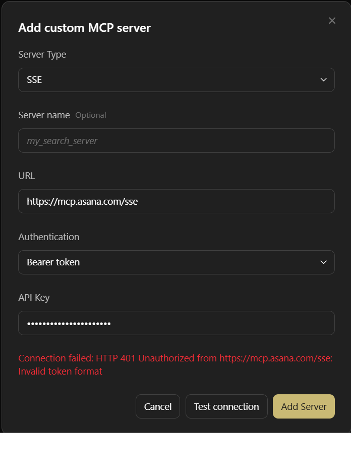
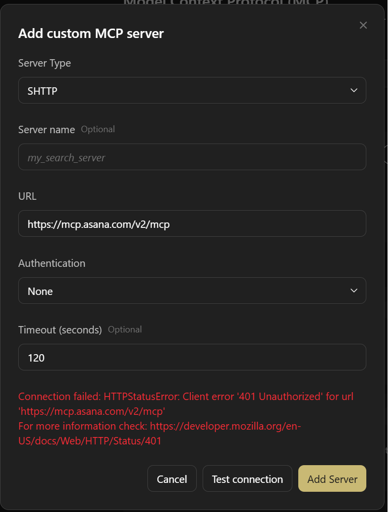
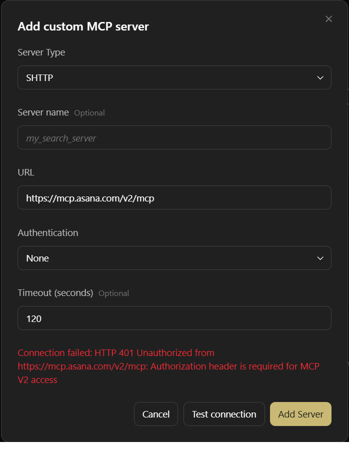
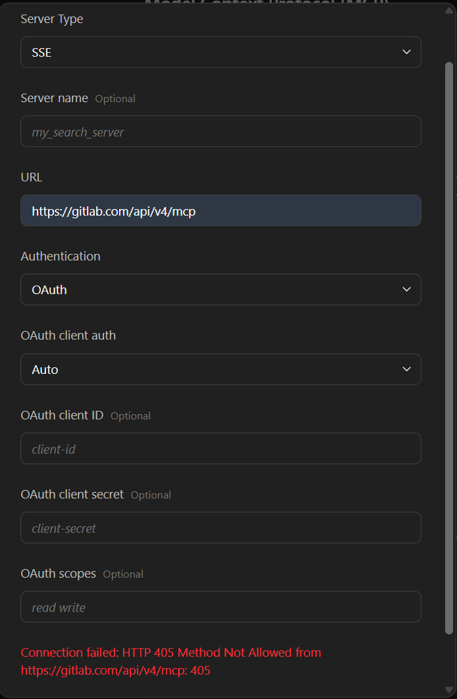
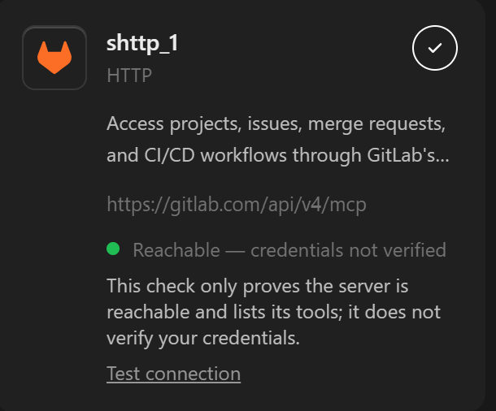
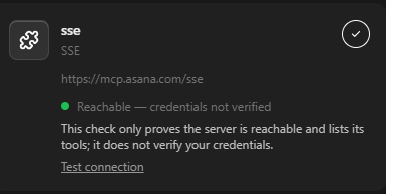

Surface the MCP server's reason for HTTP 4xx/5xx in /api/mcp/test
Refs #5276 · bug fix · no public API or REST contract change
1. Problem
When an MCP server rejects the connection with an HTTP error, Agent Canvas shows only httpx's generic
message, and the agent-server log says only MCP test failed unexpectedly. The server's
explanation is lost. For #5276, GitLab answered
403 {"message":"403 Forbidden - MCP server not enabled for any of your groups"}but the user saw
Connection failed: HTTPStatusError: Client error '403 Forbidden' for url 'https://gitlab.com/api/v4/mcp'
For more information check: https://developer.mozilla.org/en-US/docs/Web/HTTP/Status/4032. Root cause (two layers)
- Transport (SDK). The
mcpclient streams its requests (client.stream(...)for streamable HTTP,aconnect_sse(...)for SSE) and callsraise_for_status()before the body is read. The resultinghttpx.HTTPStatusErrorhas an unread response:exc.response.textraisesResponseNotRead. - REST (agent-server).
_probe_mcp_server()handles the error in its genericexcept Exceptionand returnsf"{type(exc).__name__}: {exc}"; httpx's message carries only the status and URL.
3. Change
3.1 SDK — openhands-sdk/openhands/sdk/mcp/utils.py: make the reason readable
Every remote MCP server (streamable HTTP and SSE) now gets an httpx client with a response hook that reads 4xx/5xx bodies. The existing Agent Plugins package class is generalized instead of adding a second one:
| Before | After | |
|---|---|---|
| Class | _PackageRemoteMCPServer, used only for Agent Plugins servers |
_HookedRemoteMCPServer, used for every RemoteMCPServer |
| Client factory | set only when the server is streamable HTTP and has headers | always set (to_transport() only returns StreamableHttpTransport | SSETransport) |
| Request hook | §7.2.1 drop configured headers off-origin | same, only when _bind_headers_to_origin (= literal_values) and headers are set |
| Response hook | none | _read_error_response_body: await response.aread() if response.is_error |
class _HookedRemoteMCPServer(RemoteMCPServer):
_bind_headers_to_origin: bool = PrivateAttr(default=False)
def to_transport(self): # type: ignore[override]
transport = super().to_transport()
request_hooks = []
if self._bind_headers_to_origin and self.headers:
request_hooks.append(
_drop_headers_off_origin(self.url, tuple(self.headers))
)
transport.httpx_client_factory = _mcp_http_client_factory(request_hooks)
return transport
# _prepare_mcp_config()
if isinstance(server, RemoteMCPServer):
hooked = _HookedRemoteMCPServer.model_validate(server.model_dump())
hooked._bind_headers_to_origin = server_spec.literal_values
prepared.mcpServers[server_name] = hookedThe client is still built by mcp's create_mcp_http_client() with the same arguments, so
timeouts, redirects, headers and auth are unchanged. 2xx responses (including SSE streams) are skipped by the
hook. The factory is replaced after super().to_transport(), so fastmcp's OAuth keeps the factory it
bound in the transport constructor.
3.2 agent-server — mcp_router.py: extract and show the reason
except httpx.HTTPStatusError as exc:
detail = _describe_http_status_error(exc)
logger.warning("MCP test failed for server %r: %s", request.name, detail)
return MCPTestFailure(error=detail, error_kind="unknown")error becomes HTTP <status> <phrase> from <url>: <reason>. The URL drops
userinfo, query and fragment (copy_with(userinfo=b"", query=None, fragment=None)) so credentials in
the URL never reach the UI or logs. The reason is the first non-empty candidate, human-readable text before
machine codes, normalized to single spaces and capped at 300 characters:
| # | Source | Basis |
|---|---|---|
| 1 | WWW-Authenticate error_description | RFC 6750 |
| 2 | JSON error_description | OAuth 2.0 (RFC 6749 §5.2) — Notion, Linear, Sentry, Asana, Stripe |
| 3 | JSON message | GitLab / GitHub REST convention |
| 4 | JSON error.message | JSON-RPC 2.0 — the mcp SDK's own server error responses |
| 5 | JSON detail | RFC 9457 problem+json, FastAPI |
| 6 | JSON string error | usually a code (invalid_token) |
| 7 | WWW-Authenticate error | code only |
| 8 | raw body text | fallback |
Probing 9 public MCP servers with an invalid token showed that most put only an error code in the header and the human-readable reason in the JSON body, which is why the body has to be readable (3.1).
4. Compatibility
- REST:
MCPTestFailureis unchanged;error_kindstaysunknown, so no new enum value and no client update. Canvas rendersunknownasConnection failed: {error}; switching toconnectionwould have replaced the reason with a fixed "Could not reach the server" text. The status code stays in the string, so Canvas's\b(401|403)\bcredential heuristic still matches. - SDK: no public symbol added or removed.
create_mcp_tools()still raiseshttpx.HTTPStatusErrorwith the samestr(exc); the only difference is thatexc.response.text/.json()now work. Conversation logs are unchanged. - Agent Plugins §7.2.1: unchanged; still covered by
test_configured_headers_do_not_follow_a_redirect_off_origin.
Impact by MCP server source × transport
| Source | stdio | streamable HTTP | SSE |
|---|---|---|---|
User/caller config (Canvas, REST incl. /api/mcp/test, Agent(mcp_config=...)), skill mcp_tools, subagent mcp_config, Claude Code plugin .mcp.json |
unchanged | + error body read | + error body read |
Agent Plugins mcp.json, with headers |
unchanged | off-origin header drop (as before) + error body read | n/a (spec forbids SSE) |
Agent Plugins mcp.json, without headers |
unchanged | + error body read | n/a |
ACP agents forward mcp_config to the external agent process and do not use this client.
5. Evidence
5.1 Agent Canvas 1.23.0 + local agent-server
Canvas launched with OH_AGENT_SERVER_LOCAL_PATH=<sdk-repo>; before = unmodified main, after = this
branch. Log lines: agent-server-log-excerpts.txt. Canvas shows the
Timeout field only for SHTTP, which identifies the transport in screenshots cropped above the type selector.
| Scenario | Before | After |
|---|---|---|
| GitLab SHTTP, OAuth, account not in an MCP-enabled group (#5276) | HTTPStatusError: Client error '403 Forbidden' … |
HTTP 403 Forbidden from https://gitlab.com/api/v4/mcp: 403 Forbidden - MCP server not enabled for any of your groups |
| GitLab SSE, OAuth, same account | same generic 403 | same 403 reason |
| GitLab SSE, OAuth, account in an MCP-enabled group (GitLab serves no SSE) | … '405 Method Not Allowed' … |
HTTP 405 Method Not Allowed from …: 405 (all GitLab's body says) |
| Asana SSE, invalid Bearer token (reason only in body) | … '401 Unauthorized' … |
HTTP 401 Unauthorized from https://mcp.asana.com/sse: Invalid token format |
Asana V2 SHTTP, no auth (reason in WWW-Authenticate) |
… '401 Unauthorized' … |
HTTP 401 Unauthorized from https://mcp.asana.com/v2/mcp: Authorization header is required for MCP V2 access |
| GitLab SHTTP, OAuth, account in an MCP-enabled group | connects | connects, 42 tools |
| Asana SSE, OAuth with a real account | — | connects, 46 tools |









5.2 Agent Plugins package servers
agent_plugin_mcp_matrix.py loads a real Agent Plugins package
through AgentPluginsFormat (literal_values=True) and connects with create_mcp_tools().
Output: agent-plugins-matrix.txt.
| Case | Before | After |
|---|---|---|
header X-Plugin-Test × huggingface.co/mcp | 4 tools | 4 tools |
| no header × huggingface.co/mcp | 4 tools | 4 tools |
| header × gitlab.com (no credentials) | 401, body ResponseNotRead | 401, body {"message":"401 Unauthorized"} |
| no header × gitlab.com | 401, body ResponseNotRead | 401, body {"message":"401 Unauthorized"} |
5.3 Tests
tests/sdk/mcp/test_create_mcp_tool.py::test_create_mcp_tools_http_error_keeps_response_body_readable[http|sse]— a local server returns 403; the raisedHTTPStatusError's body is readable.tests/agent_server/test_mcp_router.py::test_mcp_test_http_error_surfaces_server_reason— 7 response shapes (JSONmessage, headererror_description, JSONerror_description, JSON-RPCerror.message,detailover a stringerror, plain text, empty body); the request URL carriesuser:pass@and?api_key=secret, and the returnederrormust equal the expected string exactly.- Each test was checked to fail with its part of the fix removed. Without the SDK hook, the three body-based router cases fail.
6. Out of scope
- A streamable-HTTP 404 is turned into
Session terminatedby themcpclient and never becomes anHTTPStatusError. - The OAuth probe counts the human authorization wait against the probe timeout (reproduced twice while testing).